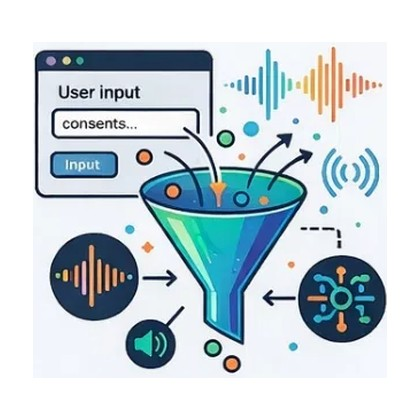
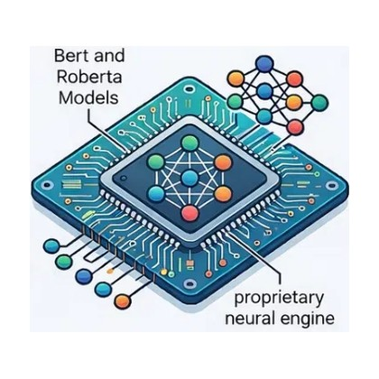
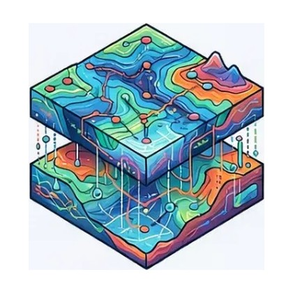
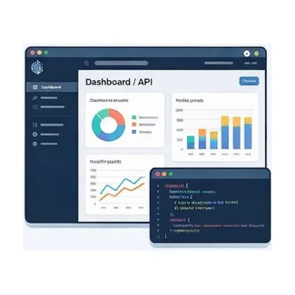

Technology
How the platform is built
Four progressive layers, from capture on the user's device through to AI-driven visualisation.
Four progressive layers, from capture on the user's device through to AI-driven visualisation.

Capture. The word-association UI users interact with directly.

Transform. Orchestration and NLP anchoring to discriminate the underlying sentimental affect signal.

Protect. A reticular affective topology held behind a multilayered organisational and infrastructure moat.

Understand. Analysing population-level sentiment via 3D contour maps and self-optimising drift/anomaly algorithms.
Lead Developer
1st Class BSc Hons in Digital Media.
UX and Product Design Guru.
Internship Programme
Part-time internships are occasionally available for exceptional junior and undergraduate candidates with experience or an interest in NLP, Data Science, Linguistics, or Transformer models.
If you would like to be part of this ground-breaking story, please get in touch.
✉ Email your CV to devops@cognitifgroup.ai